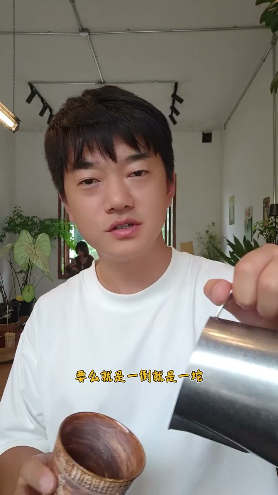
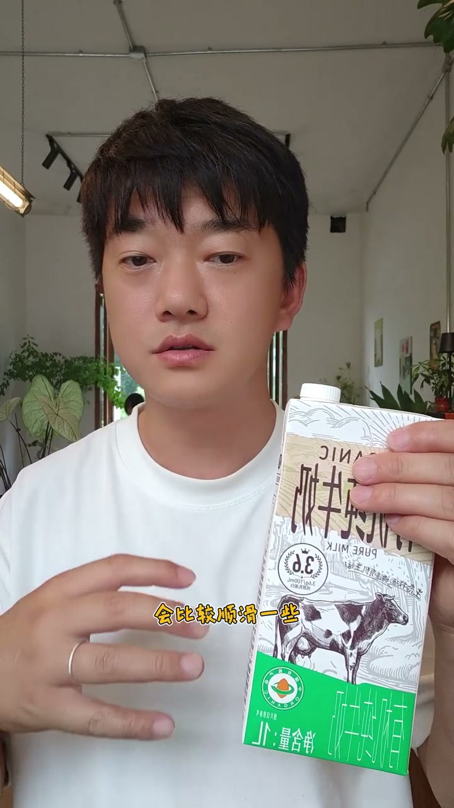
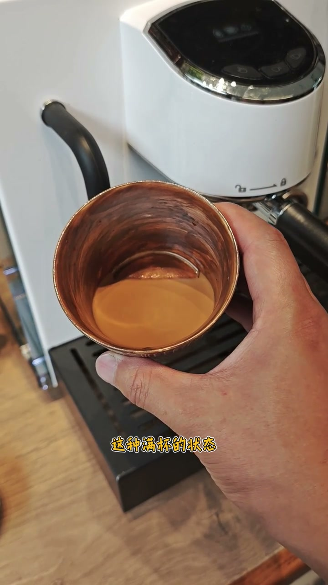
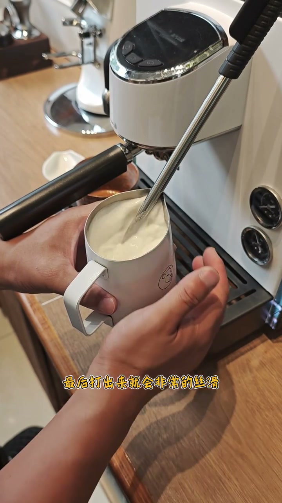
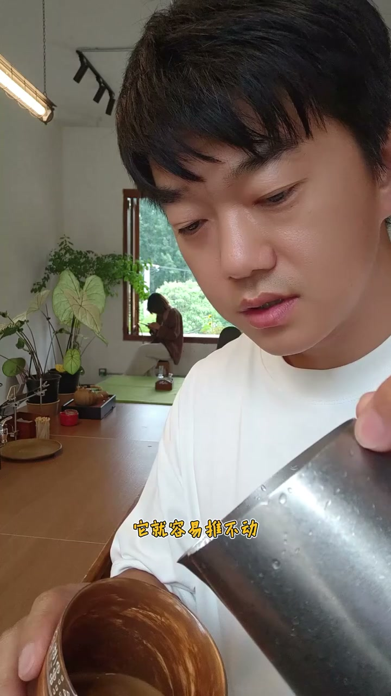

拉花拉不出来，都是因为这几个小细节
查看原视频核心结论
- 拉花失败的根本原因：奶泡没打好 + 浓缩没处理好
- 豆子：选中深烘、新鲜豆，保证油脂质量
- 牛奶：全脂冷藏奶，蛋白质和脂肪含量越高越好
- 杯子：弧形底+大口杯，给拉花足够空间
- 拉花手法反而不是第一位的——先把基础打好
选材篇：豆、奶、杯
咖啡豆：选中深烘或深烘豆，油脂更丰富。必须新鲜，放了三个月的豆子不行。
牛奶：必须全脂牛奶，必须冷藏（否则打不出好奶泡）。选择蛋白质和脂肪含量高的品牌，打出来的奶泡更顺滑。
杯子：用专门的拉花杯——底部弧形让流动性更好，杯口大给你充分的操纵空间。导口杯也是好选择。

萃取篇：油脂的均匀性
浓缩流速不能太慢（不是滴答滴答的）。流速过慢→油脂含量太高→表面张力大→拉花时牛奶推不开。萃取后摇一摇浓缩，让表面张力均匀分布，避免一边稠一边稀。

打奶篇：进气与打磨
打奶前先放蒸汽棒里的冷凝水。蒸汽棒伸入牛奶一半深度开始进气，听到"嘶嘶"声说明在进气。进气5-6秒后把奶缸往上抬一点，让蒸汽棒深入牛奶内部旋转——大奶泡切割 + 小奶泡打磨，最终打出丝滑奶泡。感觉到烫手就停。
打完有大气泡？在桌上震几下就消失。

倒缸篇：均匀性的关键
刚打好的奶泡上面厚下面薄。不处理直接拉花→前期倒的是薄奶泡没事→到后期厚的下来→推不动或一坨。所以必须倒缸：把奶泡从一缸倒到另一缸，再倒回来，让上下厚薄混合均匀。倒完再晃一晃，确保均匀。
倒缸 = 奶泡均匀化的关键步骤，90%的新手都会跳过

拉花篇：手法在基础之后
拉花前先往浓缩里倒一点牛奶，摇一摇让表面张力更平均。然后高位置小流量融合到五六分满，再放低、加大流量往前推，慢慢回杯——一个爱心就出来了。

总结：奶泡打好了 + 浓缩处理平滑了 + 手法再差也能出形状
详细文字转录（129段）
以下内容按 Whisper 原始分段完整呈现，可能包含识别误差。
- [00:00]为什么你的拉花总是不成功
- [00:02]要么就是推不动
- [00:04]要么就是一倒就是一坨
- [00:06]为什么呢
- [00:08]今天我给大家分享一下
- [00:10]这个视频呢
- [00:12]可能说话比较啰嗦
- [00:14]但是有很多细节的点
- [00:15]希望能对大家有帮助
- [00:17]首先在选豆子的时候
- [00:19]一定要选择这种中升风
- [00:21]或者升风的那种豆子
- [00:23]它的油脂会好一些
- [00:25]而且咖啡豆一件新鲜
- [00:27]不要放了三个月再去用它
- [00:29]今天是不太行的
- [00:31]然后就是牛奶的选择
- [00:33]一定要选择这种重牛奶
- [00:35]必须要冷藏
- [00:37]是必须
- [00:39]然后尽量的选择这个蛋白质
- [00:41]和脂肪高一点
- [00:42]它打出来的话会比较顺滑一些
- [00:44]还有一个就是在选择拉花的杯子上面
- [00:46]大家可以选择这种
- [00:48]专门的这种拉花杯
- [00:50]就是它底部是这种弧形
- [00:52]然后这种流动性会比较好一点
- [00:54]还有它的口会比较大一些
- [00:56]口大的话
- [00:58]你拉花它也有发挥的空间
- [01:00]还有一个大家就是可以选择
- [01:02]这种珠口杯
- [01:04]它拉花当然也会好一点
- [01:06]今天我就用我自己做的
- [01:08]这个珠口杯来拉花
- [01:09]你摇晃之后
- [01:11]它表面形成这种黄色的
- [01:13]这种满杯的状态
- [01:15]就是如果你的流速很慢
- [01:17]它是滴答滴答下来的话
- [01:19]它的油脂的含量很高
- [01:21]这样它表面的张力就很大
- [01:23]你在后期拉花的时候
- [01:25]它就容易把你的牛奶
- [01:27]你拉住你就推不开
- [01:29]在打奶泡之前
- [01:31]我们先把这个蒸汽棒里的水放一下
- [01:33]刚拿过来
- [01:35]这个之前我的视频里讲过
- [01:37]如何去打奶泡
- [01:38]然后大家可以去翻一下
- [01:40]然后我这个蒸汽比较大
- [01:42]所以我就差不多伸进去
- [01:44]一半的这个距离
- [01:46]我们开始打奶
- [01:48]撕撕撕就是进气
- [01:50]然后你如果进来五六秒就够了
- [01:52]那你就把奶缸往上抬一点
- [01:54]让那个蒸汽棒
- [01:56]生的牛奶里面
- [01:58]让它充分的旋转
- [02:00]这个就是把奶泡
- [02:02]大奶泡进行切割
- [02:04]把小奶泡进行打磨
- [02:05]最后打出来就会非常的丝滑
- [02:07]好差不多感觉到烫手
- [02:09]就泡完了
- [02:11]如果你打完之后
- [02:13]看见上面有一种大的泡泡怎么办
- [02:15]在桌子上正几下
- [02:17]你看这个大泡泡就不见了
- [02:19]岛刚这个步骤还是相当重要的
- [02:21]因为现在我们可以看到
- [02:23]我们刚拿好的奶泡
- [02:25]它就是上面比较厚
- [02:27]下面比较薄
- [02:29]我们在往下倒的时候
- [02:31]其实刚开始倒的是它下面的奶泡
- [02:32]最后需要我们拉花的时候呢
- [02:34]倒下来就是比较厚的奶泡
- [02:36]所以说为什么我们拉花的时候
- [02:38]到最后一倒它推不动
- [02:40]或者是倒一倒就是一坨
- [02:42]就是因为我们这个奶泡不均匀
- [02:44]所以说岛刚非常严
- [02:46]一倒它就融合
- [02:48]薄厚就差不多了
- [02:50]再再晃一晃
- [02:52]它薄厚就相对比较均匀
- [02:54]我们在拉花之前呢
- [02:56]可以把我们的奶
- [02:58]轻轻地震一下
- [03:00]然后再多晃两下
- [03:01]让它均匀一些
- [03:03]我们的浓缩
- [03:05]其实它现在挺丝滑的
- [03:07]然后我们可以先往里给它来一点牛奶
- [03:09]把它摇一摇
- [03:11]让它这个表面的张力平均一点
- [03:13]不是说这一边比较稠
- [03:15]那一边比较稀
- [03:17]这样你拉花的话
- [03:19]它就容易推不动
- [03:21]高位置小油要去融合
- [03:23]差不多融合到五六分
- [03:25]开始拉低
- [03:27]别倒了 往前推
- [03:28]然后慢慢地回背
- [03:30]这一个爱心就出来了
- [03:32]大家看完之后
- [03:34]肯定能感觉的出来
- [03:36]我这里面说的小细意呢
- [03:38]主要就是说
- [03:40]如何让你的这个牛奶
- [03:42]变得更均匀更丝滑
- [03:44]如何让你的浓缩更均匀更丝滑
- [03:46]你的奶泡打好了之后
- [03:48]然后你的浓缩
- [03:50]它又比较平滑
- [03:52]这样即使你不会拉花
- [03:54]你也能弄出一个差不多的形状
- [03:55]不至于说什么都弄不开
- [03:57]所以说你拉花拉不好
- [03:59]主要就是奶泡没打好
- [04:01]你的浓缩没有处理好
- [04:03]这两件事情如果你都做到
- [04:05]即使你的手法不怎么好
- [04:07]但是你也能基本上弄出一个形状